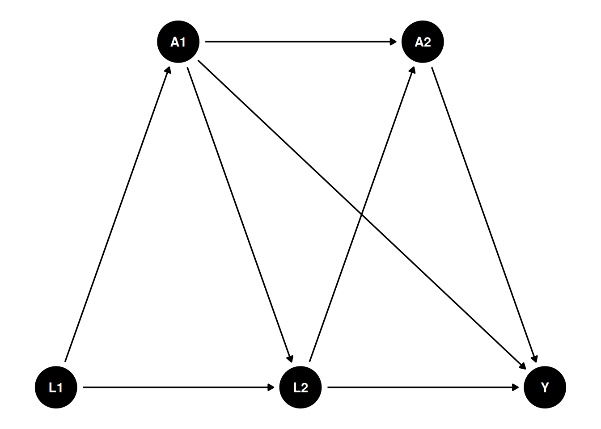

35 longitudinal modified treatment policy (LMTP)
I read a few papers with longitudinal modified treatment policy (LMTP), and found it interesting. It has been used in epidemiology and biostatistics, but I have not seen it in applied econometrics yet.
Here I am mostly following Nicholas Williams: https://beyondtheate.com/
We are usually interested in ATE, the average treatment effect. However, there could be more complicated situations that the treatment is continuous, or the treatment is multivalued, or the treatment is time-varying. The static interventions have problems. For example, the hypothetical interventions that treatment applies to everyone might be inconceivable. Or such intervention could make positivity assumption fail.
Suppose we have such a DAG:
We have multiple time points, and the treatment \(A\) is time-varying. We are interested in not only the ATE of \(A_2\) on \(Y\), but also some other hypothetical interventions.
35.1 Definitions and assumptions
35.1.1 Assumptions
Positivity. Basically if there is a unit with \(a_t\) and \(h_t\), then there is a unit with \(d(a_t, h_t)\) and \(h_t\).
Sequential unconfoundedness. There is no unmeasured confounders.
35.1.2 dynamic treatment regime
Some notations commonly used in this literature: We observe \(Z = (L_0, A_0, L_1, A_1, Y)\), where \(L\) is the observed confounder, \(A\) is the treatment, and \(Y\) is the outcome. The treatment \(A\) can be time-varying. We can also have multiple treatments at different time points. For example, we can have \(A_2\), \(A_3\), etc. In this graph, baseline \(L_0\) affects \(A_0\), which in turn affects \(L_1\), which then affects \(A_1\), and finally \(A_1\) affects the outcome \(Y\).
History \(H_t\) is the history of data up to time \(t\), right before \(A_t\). for example, \(H_1 = (L_0, A_0, L_1)\), and \(H_2 = (L_0, A_0, L_1, A_1)\). \(d\) is the hypothetical intervention function, or shift function, which is a function of the history \(H_t\) and the treatment \(A_t\). For example, \(d_0(a_0,h_0,\epsilon_0)\) is a user-given function to map \(a_0\), \(h_0\), and \(\epsilon_0\) to a potential treatment value. The function \(d\) can be deterministic, or it can be stochastic. Then we can replace \(A_0\) with \(A_0^d = d_0(A_0, H_0, \epsilon_0)\). Then after that \(A_1(A_0^d)\) is called the natural value of treatment.
This is very general, comparing to the static treatment regime.
Suppose treatment \(A\) is a function of the history of treatment and confounders, for example, \(A = d(A_1, L_1, A_2, L_2)\). \(A\) can be set to a fixed value, say 1 or 0, or some value \(A^d\). This function \(d\) can be anything, it can be taking a deterministic value, or it can be a function that takes the natural treatment value \(A\) as input. In the package “lmtp”, this is called a shift function, or hypothetical intervention. For example, \(d\) can be set to 1 if \(age < 30\), or \(d\) can be set to double the natural value of \(A\). Many possibilities.
In comparison, for ATE, we only need to set \(A\) to 0 or 1.
Under this LMTP, the causal parameter is
\[ \theta = E[Y^{\bar A^d}] \]
\(Y^{\bar A^d}\) is the potential outcome under the hypothetical intervention \(\bar A^d\). At time 1, \(A^d_1 = d(A_1,H_1)\).
35.1.3 modified treatment policy
Let’s look at a simulated data set to see how exactly we can estimate it.
This simulation is from Susmann et al. (2024) “Longitudinal Generalizations of the Average Treatment Effect on the Treated for Multi-valued and Continuous Treatments”. I modified slightly to fit the DAG above.
library(tidyverse)
library(tidyr)
mtp <- function(data, trt) {
a <- data[[trt]]
a * 0 + 1
}
simulate_data <- function(seed, N, tau, sigma = 0.5) {
set.seed(seed)
data <- tibble(id = 1:N)
for(t in 1:tau) {
Lt <- paste0("L_", t)
Ltd <- paste0("L_", t, "d")
At <- paste0("A_", t)
Atd <- paste0("A_", t, "d")
Lt1 <- paste0("L_", t - 1)
Lt1d <- paste0("L_", t - 1, "d")
At1 <- paste0("A_", t - 1)
At1d <- paste0("A_", t - 1, "d")
if(t == 1) {
data[[Lt]] <- runif(N, 0, 1)
data[[Ltd]] <- data[[Lt]]
data[[At]] <- rbinom(N, size = 1, prob = 0.5)
}
else {
# L_t depends on the previous treatment A_{t-1} (the DAG edge A1 -> L2),
# which is the time-varying confounding this chapter is about.
data[[Lt]] <- rnorm(N, mean = 0.25 * data[[Lt1]] + 0.4 * data[[At1]], 0.5)
data[[Ltd]] <- rnorm(N, mean = 0.25 * data[[Lt1d]] + 0.4 * data[[At1d]], 0.5)
data[[At]] <- rbinom(N, size = 1, prob = plogis(0.5 - 0.2 * data[[At1]] + 0.1 * data[[Lt1]]))
}
data[[Atd]] <- mtp(data, At)
}
# Y depends on the final treatment A_2 and confounder L_2, and also directly
# on the first-period treatment A_1 (the DAG edge A1 -> Y).
data$Y <- rnorm(N, data[[At]] + data[[Lt]] + 0.5 * data[["A_1"]], sigma)
data$Yd <- rnorm(N, data[[Atd]] + data[[Ltd]] + 0.5 * data[["A_1d"]], sigma)
data
}
simulated_data1 <- simulate_data(seed = 123, N = 10000, tau = 2)
mean(simulated_data1$Yd)[1] 2.028593mtp <- function(data, trt) {
a <- data[[trt]]
a * 0 + 0
}
simulated_data2 <- simulate_data(seed = 123, N = 10000, tau = 2)
mean(simulated_data2$Yd)[1] 0.1285934[1] 1.9Note in this simulation the variables ending with “d” are the variables under hypothetical intervention, or modified treatment policy. \(L_1\) is from \(\text{Uniform}(0,1)\), and \(L_2\) is from \(N(0.25 L_1 + 0.4 A_1,\ 0.5)\) – so the time-varying confounder \(L_2\) depends on the earlier treatment \(A_1\), which is the time-varying confounding this chapter is about. The treatment \(A_1\) is from a Bernoulli distribution with probability 0.5, and the treatment \(A_2\) is from a Bernoulli distribution with probability \(\text{plogis}(0.5 - 0.2 A_1 + 0.1 L_1)\). The outcome \(Y\) is from a normal distribution with mean \(A_2 + L_2 + 0.5 A_1\), so \(Y\) depends on both the current treatment \(A_2\) and the lagged treatment \(A_1\). In the code, the first modified treatment policy sets treatment to 1 in every period (simulated_data1) and the second sets it to 0 in every period (simulated_data2); the reported difference \(E[Y^{d}_{\text{always }1}] - E[Y^{d}_{\text{always }0}]\) is the effect of the always-treat versus never-treat static regimes.
In this case, we can just do a linear regression to get the effect of A2 on Y, knowing the exact DAG.
Call:
glm(formula = Y ~ L_2 + A_1 + A_2, data = simulated_data1)
Coefficients:
Estimate Std. Error t value Pr(>|t|)
(Intercept) -3.453e-05 9.615e-03 -0.004 0.997
L_2 9.998e-01 9.889e-03 101.103 <2e-16 ***
A_1 -6.042e-03 1.001e-02 -0.604 0.546
A_2 1.000e+00 1.027e-02 97.380 <2e-16 ***
---
Signif. codes: 0 '***' 0.001 '**' 0.01 '*' 0.05 '.' 0.1 ' ' 1
(Dispersion parameter for gaussian family taken to be 0.2500364)
Null deviance: 7400.0 on 9999 degrees of freedom
Residual deviance: 2499.4 on 9996 degrees of freedom
AIC: 14523
Number of Fisher Scoring iterations: 2Let’s try a different MTP: set half of the time to 0, the other half remain unchanged. \[ d(a_t, \epsilon_t) = \begin{cases} 0, & \text{if } \epsilon_t < .5 \ and \ a_t =1 \\ a_t, & \text{otherwise} \end{cases} \]
This is, say, to set half of smokers to non-smokers, and the other half remain smokers.
# mtp <- function(data, trt) {
# a <- data[[trt]]
# epsilon <- rbinom(nrow(data), size = 1, prob = 0.5)
# ifelse(epsilon <.5 & a == 1, 0, a)
# }
d <- function(a) {
epsilon <- runif(length(a))
ifelse(epsilon < 0.5 & a == 1, 0, a)
}
simulated_data1$m3_d <- simulated_data1$Y
m2 <- glm(m3_d ~ L_1 + A_1 + L_2 + A_2, data = simulated_data1)
summary(m2)
Call:
glm(formula = m3_d ~ L_1 + A_1 + L_2 + A_2, data = simulated_data1)
Coefficients:
Estimate Std. Error t value Pr(>|t|)
(Intercept) -0.005815 0.012842 -0.453 0.651
L_1 0.011964 0.017621 0.679 0.497
A_1 -0.005956 0.010012 -0.595 0.552
L_2 0.998831 0.009987 100.015 <2e-16 ***
A_2 0.999873 0.010273 97.334 <2e-16 ***
---
Signif. codes: 0 '***' 0.001 '**' 0.01 '*' 0.05 '.' 0.1 ' ' 1
(Dispersion parameter for gaussian family taken to be 0.2500499)
Null deviance: 7400.0 on 9999 degrees of freedom
Residual deviance: 2499.2 on 9995 degrees of freedom
AIC: 14525
Number of Fisher Scoring iterations: 2
Call:
glm(formula = m2_d ~ L_1 + A_1, data = simulated_data1)
Coefficients:
Estimate Std. Error t value Pr(>|t|)
(Intercept) 0.277598 0.015072 18.418 <2e-16 ***
L_1 0.289658 0.023474 12.339 <2e-16 ***
A_1 -0.008247 0.013462 -0.613 0.54
---
Signif. codes: 0 '***' 0.001 '**' 0.01 '*' 0.05 '.' 0.1 ' ' 1
(Dispersion parameter for gaussian family taken to be 0.4528119)
Null deviance: 4596.0 on 9999 degrees of freedom
Residual deviance: 4526.8 on 9997 degrees of freedom
AIC: 20461
Number of Fisher Scoring iterations: 2[1] 0.4197166Note this recursive process is based on Diaz, et al. (2023) “Nonparametric Causal Effects Based on Longitudinal Modified Treatment Policies”.
Here is how exactly we estimate it: we start with the last time point. Regress it on previous treatment and confounders, and then get the predicted value with \(A\) changed based on the MTP. Regress that predicted value on the previous treatment and confounders, get predicted values with \(A\) changed based on MTP. Repeat until the first time point. The average of the predicted value at time 1 is the expected value under this MTP.
The shift function d() above is a stochastic intervention: at each call it draws a fresh \(\epsilon \sim \text{Uniform}(0,1)\) and, with probability 0.5, switches a treated unit (\(a=1\)) to \(0\), otherwise leaves \(a\) unchanged. The regime is “at each time point, draw independently conditional on history and apply this rule”; because the draw is independent across time points and units, calling d() separately for \(A_2\) and \(A_1\) is what implements that regime. (By contrast, the d1/d2 functions used with lmtp_tmle below are deterministic static regimes – always 1 and always 0.)
This is basically g-formula extended to longitudinal data.
In a general case, this is the generalized g-formula to estimate \(\theta\):
Set \(m_{\tau + 1} = Y\), let \(A_t^d = d(A_t, H_t)\). For \(t = \tau, \ldots, 1\), recursively define:
\[ m_t(a_t, h_t) = E[m_{t + 1} (A_{t+1}^d, H_{t+1}) | A_t = a_t, H_t =h_t] \]
Then \(\theta = E[m_1(A_1^d, L_1)]\).
We start from the last period. Regress \(m_{\tau + 1}\), which is \(Y\) on \(A_{\tau}\) and \(H_{\tau}\). Then get the predicted value with \(A_{\tau}\) changed based on the MTP. Then regress that predicted value on \(A_{\tau - 1}\) and \(H_{\tau - 1}\). Repeat until the first time point. The average of the predicted value at time 1 is the expected value under this MTP.
35.1.4 Estimators
The authors advocate two estimators, TMLE and SDR (sequentially doubly robust estimator). The procedures are the same, starting from the last time point, then apply TMLE or SDR, iterate to the first time point.
35.2 Using lmtp package
library(tidyverse)
library(lmtp)
d1 <- function(data, trt) {
rep(1, nrow(data))
}
A <- "A_2"
Y <- "Y"
W <- c("L_1", "L_2", "A_1")
set.seed(34465)
treat <- lmtp_tmle(
data = simulated_data1,
trt = "A_2",
outcome = "Y",
baseline = W,
outcome_type = "continuous",
shift = d1,
folds = 1,
learners_trt = "SL.glm",
learners_outcome = "SL.glm"
)
print(treat)::: {.cell-output .cell-output-stdout}
Estimate: 1.117
Std. error: 0.008:::
d2 <- function(data, trt) {
rep(0, nrow(data))
}
A <- "A_2"
Y <- "Y"
W <- c("L_1", "L_2", "A_1")
set.seed(34465)
control <- lmtp_tmle(
data = simulated_data1,
trt = "A_2",
outcome = "Y",
baseline = W,
outcome_type = "continuous",
shift = d2,
folds = 1,
learners_trt = "SL.glm",
learners_outcome = "SL.glm"
)
print(control)::: {.cell-output .cell-output-stdout}
Estimate: 0.117
Std. error: 0.009lmtp_contrast(treat, ref = control)::: {.cell-output .cell-output-stdout}
shift ref estimate std.error conf.low conf.high p.value
1 1.12 0.117 1 0.0102 0.98 1.02 <0.001::: :::
Note that folds = 1 turns off cross-fitting (sample splitting). That is fine for a small, fast demonstration with SL.glm, but in applied work with flexible learners you should use several folds so the nuisance fits are cross-fitted; otherwise the standard errors can be anti-conservative.
Note on the estimand: this lmtp_tmle example only shifts \(A_2\) (trt = "A_2"), treating \(A_1\) as an observed baseline covariate (via baseline = W) rather than also intervening on it. That is a different, single-period policy from the always-1-vs-always-0 both-period regime computed manually via simulated_data1$Yd/simulated_data2$Yd above (lines 139-152) — the two numbers are not expected to match, and should not be used as a sanity check against each other. To replicate the both-period always-treat/never-treat contrast with lmtp, shift both time points by passing trt = c("A_1", "A_2") and supplying time_vary (the time-varying covariates measured before each treatment time, e.g. list(character(0), "L_2")), with shift functions that map each treatment in the vector to 1 (or 0).
35.3 another example
The data set bmi, from the DynTxRegime package, are simulated to reflect a two-stage RCT {A1, A2} that studied the effect of meal replacement (MR) shakes versus a calorie deficit (CD) diet on adolescent
35.3.1 shift function 1
Consider a shift function that assigns meal replacement to all observations at time 1, but only meal replacement at time 2 to those observations whose 4-month BMI is greater than 30.
Rows: 210
Columns: 8
$ gender <int> 0, 1, 1, 1, 1, 0, 0, 1, 1, 0, 0, 0, 1, 0, 0, 1, 0, 0, 1, 1…
$ race <int> 1, 0, 0, 0, 1, 0, 1, 1, 1, 0, 1, 1, 1, 0, 1, 1, 0, 0, 1, 0…
$ parentBMI <dbl> 31.59683, 30.17564, 30.27918, 27.49256, 26.42350, 29.30970…
$ baselineBMI <dbl> 35.84005, 37.30396, 36.83889, 36.70679, 34.84207, 36.68640…
$ month4BMI <dbl> 34.22717, 36.38014, 34.42168, 32.52011, 33.72922, 32.06622…
$ month12BMI <dbl> 34.27263, 36.38401, 34.41447, 32.52397, 33.73546, 32.15977…
$ A1 <chr> "CD", "CD", "MR", "CD", "CD", "MR", "CD", "CD", "CD", "CD"…
$ A2 <chr> "MR", "MR", "CD", "CD", "CD", "MR", "MR", "CD", "MR", "MR"…d_dtr <- function(data, trt) {
if (trt == "A1") return(rep("MR", nrow(data)))
ifelse(data$month4BMI > 30, "MR", "CD")
}
fit_dtr <- lmtp_sdr(
data = bmi,
trt = c("A1", "A2"),
outcome = "month12BMI",
baseline = c("gender", "race", "parentBMI"),
time_vary = list("baselineBMI", "month4BMI"),
shift = d_dtr,
outcome_type = "continuous",
folds = 1,
learners_trt = "SL.glm",
learners_outcome = c("SL.mean", "SL.glm", "SL.gam")
)
fit_dtr::: {.cell-output .cell-output-stdout}
Estimate: 35.854
Std. error: 0.362:::
35.3.2 shift function 2
Suppose we are interested in comparing the dynamic treatment regime to a static treatment regime where all patients receive meal replacement at both time points. Using the SDR estimator, estimate the effect of this static intervention.
fit_MR <- lmtp_sdr(
data = bmi,
trt = c("A1", "A2"),
outcome = "month12BMI",
baseline = c("gender", "race", "parentBMI"),
time_vary = list("baselineBMI", "month4BMI"),
shift = \(data, trt) rep("MR", nrow(data)),
outcome_type = "continuous",
folds = 1,
learners_trt = "SL.glm",
learners_outcome = c("SL.mean", "SL.glm", "SL.gam")
)
fit_MR::: {.cell-output .cell-output-stdout}
Estimate: 35.831
Std. error: 0.361:::
Let’s also estimate the effect of an intervention where all patients receive a calorie deficit diet at both time points.
fit_CD <- lmtp_sdr(
data = bmi,
trt = c("A1", "A2"),
outcome = "month12BMI",
baseline = c("gender", "race", "parentBMI"),
time_vary = list("baselineBMI", "month4BMI"),
shift = \(data, trt) rep("CD", nrow(data)),
outcome_type = "continuous",
folds = 1,
learners_trt = "SL.glm",
learners_outcome = c("SL.mean", "SL.glm", "SL.gam")
)
fit_CD::: {.cell-output .cell-output-stdout}
Estimate: 35.053
Std. error: 0.301:::
Finally, we can compare the three treatment regimes using the lmtp_contrast function.
lmtp_contrast(fit_dtr, fit_MR, ref = fit_CD)::: {.cell-output .cell-output-stdout}
shift ref estimate std.error conf.low conf.high p.value
1 35.9 35.1 0.801 0.335 0.144 1.46 0.0169
2 35.8 35.1 0.778 0.335 0.122 1.43 0.0201:::